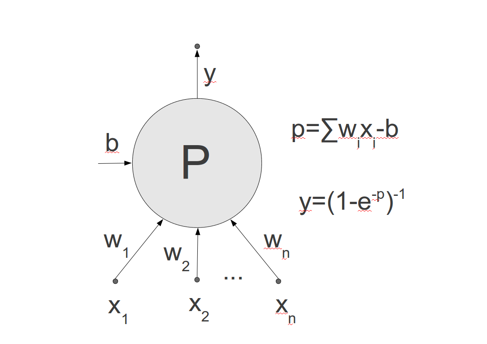
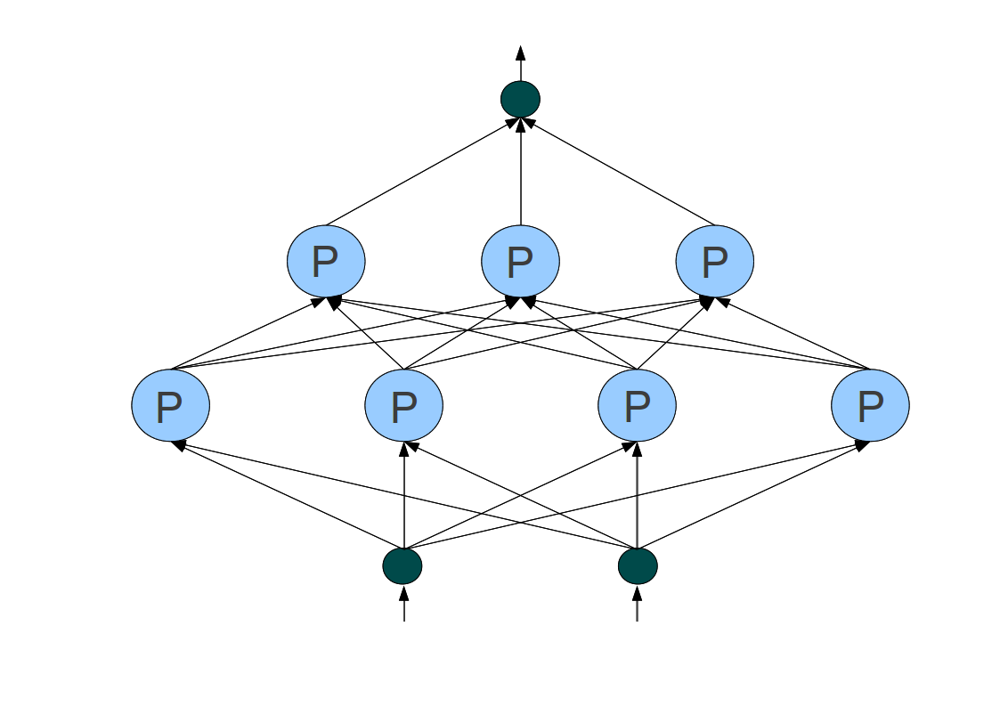

Vícevrstvý perceptron je v současnosti asi nejpopulárnějším modelem umělé neuronové sítě, který se používá k řešení praktických problémů. Jeho návrh pochází z 50.let dvacátého století, kdy se Franku Rosenblattovi podařilo využít předchozích prací o tom, jak matematicky modelovat jednu nervovou buňku, neuron. Model neuronu má více vstupů a jeden výstup. Každý vstup má přiřazenou hodnotu tzv. synaptické váhy, která daný vstupní signál buď zesiluje nebo zeslabuje. Váženou sumu vstupů a vah pak nazýváme potenciálem neuronu. Je zajímavé, že výstupní signál neuronu je pro malé hodnoty potenciálu nulový, ale jakmile hodnota potenciálu přesáhne určitou hodnotu, říkáme jí práh, je výstup roven 1. Matematicky se celá věc popíše jednoduše pomocí tzv sigmoidální funkce. Nejčastějšími příklady sigmoidálních funkcí je hyperbolický tangens nebo tzv. logistická sigmoida.
Rosenblatt propojil matematické modely neuronů do jedné vrstvy, která má několik jednotek propojených se vstupy a výstupy úlohy. Vznikla tak jednovrstvá perceptronová síť. Důležité bylo, že Rosenblatt přišel i s učícím algoritmem, který na základě kvadratické chyby (popsané v předchozí části) měnil parametry sítě. Učení je v tomto případě vlastně změna hodnot vah a prahů umělých neuronů.
Jednovrstvý perceptron byl populární a poměrně jednoduchou metodou analýzy dat. Vědci odvodili, že je schopen řešit jen tzv. lineárně-separabilní úlohy, to znamená klasifikace, kde množiny jednotlivých kategorií oddělíme lineární funkcí (přímkou pro D=2, rovinou pro D=3, atd.). Je ale jasné, že spousta dat není lineárně-separabilní, takže jednovrstvý perceptron nedokáže vytvořit jejich věrný model.
Proto vznikl model vícevrstvé perceptronové sítě, který propojil více vrstev perceptronů mezi sebou. Trvalo ale celých třicet let, než se pro tuto složitější síť nalezl správný učící algoritmus. Byl objeven v roce 1986 a nazývá se metoda zpětného šíření chyby (error back propagation). Tato metoda využívá derivace chyby v prostoru vah sítě, takže se pohybuje v prostorech s dimenzí několika stovek až desetitisíců. Chyba sítě se vyjadřuje jako chybová funkce závislá na vahách sítě. Naším cílem při učení je dosáhnout minima chyby. Postupujeme iterativně: začneme v nějakém náhodně zvoleném bodě a snažíme se zjistit největší spád, po kterém sestoupíme o určitý malý krok dolů a tak znovu a znovu. Největší spád lze určit pomocí derivací chyby podle vah. Poznamenejme nakonec, že velká dimenze problému často způsobí, že po spádnici dojedeme do nějakého lokálního minima, které ale není dostatečně dobré pro naučení celého modelu. Pak nezbývá než zkusit postup znovu z jiného náhodného místa, anebo experimentovat s nastavením parametrů učení, jako je například hodnota kroku iterace.
|  |  |
| Schéma perceptronové jednotky s logistickou sigmoidou | Perceptronová síť se dvěma vrstvami perceptronových jednotek |